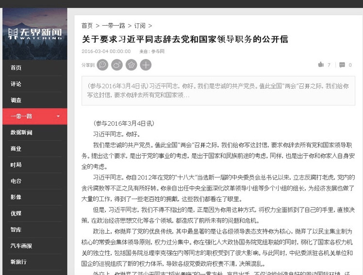
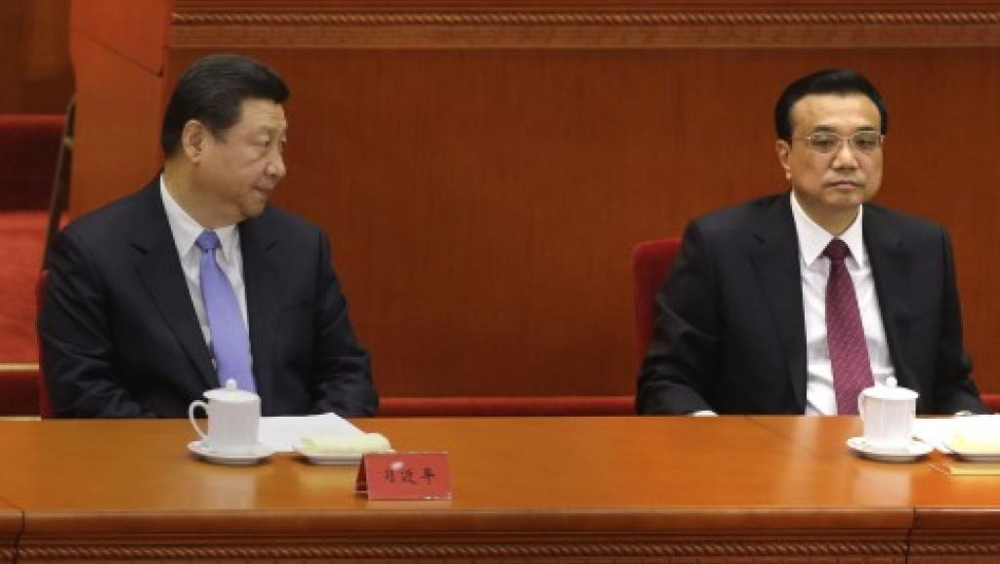

又有七八天没上线，让某些热心读者担心了，很抱歉 :(
刚才俺已经把这几天被 Google 误判为垃圾广告的留言，都恢复出来了。
今天这篇每周转载属于【政治八卦】，汇总一下近期朝廷的乱象，让大伙儿体会一下高层权斗的剧烈程度。
早在2014年，俺就发了一篇《党国喉舌反遭多次封杀，朝廷高层权斗日渐激烈》，当时有人不信，认为俺过度夸张。如今来看，高层权斗已经越来越白热化了，大伙儿要留意朝廷中的好戏 :)
先来说说上个月很火爆的“任志强事件”。关于这事儿，大伙儿肯定都有所了解，俺转贴几篇墙外的相关文章，然后再附上俺个人的点评。
《倒习不谋而盟 四股势力混战任志强事件 @ RFI/法广》
《中共因任志强事件遭遇党内外激烈反弹 @ 纽约时报》
《南桥：任志强事件的标志性意义 @ 博谈网》
（编程随想注：此文原发于《动向》杂志）
编程随想注：
聊完任志强，再来说一下前不久所谓的“十日文革”。关于这事儿，有两种说法：
说法1：习包子大搞个人崇拜，企图效仿当年的毛腊肉
说法2：这不是习的本意，而是中宣部在玩“高级黑”。
俺个人认为：两方面都有——习呆呆自己想当【个人独裁者】（他上台之后的很多言行都是在模仿毛腊肉），而真理部是江蛤蟆那派操控，有时候顺水推舟搞了一些手法（俗称“高级黑”）来恶心他。
下面是相关的评论文章。
《港媒：习核心崇拜已经玩完，有人谑称“十日文革” @ RFI/法广》
《未普：习近平的极左形像是谁造出来的？ @ RFA/自由亚洲电台》
《“习大大”之称与习有何关系 @ 北京之春》
就在开两会的这几天，隶属新疆政府的党宣媒体“无界新闻”，竟然刊登了这样一封公开信，令众多网民大跌眼镜。
这封公开信的截屏如下：

内容全文参见“这个链接”，俺摘录其中几段（如下）：
编程随想注：
《孟建柱傅政华督办倒习公开信 无界传媒执行总裁等四人失联 @ 民主中国》
除了上述那封“公开信”，这次两会的另一个看点是——习呆呆与光头强的矛盾公开化。据说“两会”结束后，北京流行的顺口溜是：
先来看一张很传神的照片：人大开幕式上的习呆呆与光头强

下面是相关的评论文章（引文的粗体是俺加滴）：
《胡平：习近平凶多吉少——在3月12日中国研究员第28次研讨会上的发言》
不光习二逼表现反常，光头强表现也很反常——开幕式与闭幕式判若两人。以下是香港《明镜新闻》上的博客文章（此文章的分析是否属实，还不好说，大伙儿姑且听之）。
《習近平被動，深謀反擊；李克强變臉，享受眾推 @ 明镜新闻》
编程随想注：
编程随想注：
《新疆党委拒为习近平表忠 舆论争持显对习大不满 @ RFI/法广》
《陈破空：反习联盟集结，习近平成最后领导人？ @ RFA/自由亚洲电台》
《刘青：返回毛时代习近平能否得逞？ @ RFA/自由亚洲电台》
《胡少江：毛泽东的一九六二和习近平的二零一六 @ RFA/自由亚洲电台》
俺博客上，和本文相关的帖子（需翻墙）：
党国喉舌反遭多次封杀，朝廷高层权斗日渐激烈
各种迹象显示——党国喉舌正逐渐失去舆论阵地
习包子露馅——习近平在内的权贵家族如何转移巨额海外资产
刚才俺已经把这几天被 Google 误判为垃圾广告的留言，都恢复出来了。
今天这篇每周转载属于【政治八卦】，汇总一下近期朝廷的乱象，让大伙儿体会一下高层权斗的剧烈程度。
早在2014年，俺就发了一篇《党国喉舌反遭多次封杀，朝廷高层权斗日渐激烈》，当时有人不信，认为俺过度夸张。如今来看，高层权斗已经越来越白热化了，大伙儿要留意朝廷中的好戏 :)
★轰轰烈烈的“任志强事件”
先来说说上个月很火爆的“任志强事件”。关于这事儿，大伙儿肯定都有所了解，俺转贴几篇墙外的相关文章，然后再附上俺个人的点评。
《倒习不谋而盟 四股势力混战任志强事件 @ RFI/法广》
法广：任志强事件给习近平带来怎样的影响呢？（此文提及的“共推弱主李克强以取代习近平”，在另一家外媒的文章中也有提及，参见本文后面的内容）
贺兰若：现在，习近平只要说点有左倾味道的话，就会被宣传系统利用放大；而他关于纪念胡耀邦、高岗和罗青长的讲话却被官媒压着不报。几年下来，宣传系统已经成功地将习近平塑造成了中国新独裁者、“毛泽东第二”和“人民公敌”。
习近平已经分不出什麽是对他的高级黑，什么是对他表忠心了；同时，所有被收拾的人的烂帐全被算在他的头上。习近平独裁者还没有当上，就已经被骂得狗血喷头了。
更为重要的一点是，此次任志强事件引发了倒习力量的集结。
法广：为什么说任志强事件引发了倒习力量的集结呢？
贺兰若：就在习近平与王岐山联手阻止了对任志强的“文革”式大批斗和围剿后，中共内部某些政治势力又捅出了一封署名“忠诚的共产党员”” ，要习近平辞职的公开信。公开信指责习破坏“一国两制”、外交内政问题进退失据、经济政策更使得千万人民蒙受不菲的损失。
本期《外参》杂志援引中国政治观察人士的观点认为，这封公开信拉开了十九大召开前中共内部派系斗争的序幕，打响倒习的第一枪。
法广：为什么中共内部各派系之间的斗争现在进入了白热化呢？
贺兰若：中共各派系势力已经为在十九大上夺权开始佈局了。习近平这几年的强人作风和集权引起党内反弹，各派势力正在考虑如何制约习近平、削习的权——甚至有可能用勃列日涅夫对付赫鲁晓夫的方法把习近平赶下台。
目前，把习近平赶下台的力量正在集结，力争共推弱主，在中共十九大上取代习近平——而弱主的最佳人选就是现任国务院总理李克强。
《中共因任志强事件遭遇党内外激烈反弹 @ 纽约时报》
任志强和王岐山的关系，引发了对此事表明高层内部出现权力争斗的怀疑。王岐山是在向习近平传递信号吗？任志强表露的不同意见是否指向了更不利于稳定的内部分歧？
在共产党的核心集团以外，没人知道答案。但如果官方不惩罚任志强，他的人脉关系可能是其中的原因。
“他们起初想严惩他，”任志强的朋友、和党内精英有联系的陈萍（音）说。“但发现反对声很大，包括党内地位相当高的人，所以他们推迟了决定。他们在等着看情况。”
《南桥：任志强事件的标志性意义 @ 博谈网》
（编程随想注：此文原发于《动向》杂志）
习近平重返毛泽东之路
......
如今习近平走的路，基本上是在重复毛泽东的路数。最近出现的歌曲《要嫁就嫁习大大这样的人》模仿的是要嫁就嫁普京的歌，更是《爹亲娘亲不如毛主席亲》的翻版。习近平是在一点一点地准备毛泽东发动文革的条件。现在，大概已经没有人还对习近平集权后展开政治体制改革抱一厢情愿的幻想了。事实上，中国大陆已经开始出现“习大大万岁”的标语。习近平的权力模式和毛泽东一样，是不能半途而下的。毛泽东只有咽气才会卸任，习近平也必然寻求终生执政。事实上他已经没有别的选择，如果他半途而下，他将死得很难看。
......
前面是灾难，谁能阻挡？
去年股市和今年楼市的怪异表现，预示着中国经济走上了一条艰难的路。从邓小平时代中共发现了“好猫”：只要搞好经济民生，老百姓就会满意。现在仍然有信心的人却开始减少了。人们终于发现，前二十年那种爷吃孙粮的中国发展模式是“不可持续”的。在全世界范围内，能搞好经济的共产党还没有出生。经济不好，老百姓的不满在积累，党的统治只有靠一个字“压”。现在这个国家险象环生，正在走向更大的灾难。
中国的特点是，国家大，人口多，文化特别萎靡。中国已经不可能再来一次八九年，不可能出现苏东波，中国也不会出现茉莉花革命。事实上，将中国从里看到外，从上看到下，看不到阻挡灾难的力量。唯一可能制约习近平的，是党内的反对意见。如今，寒蝉效应已经遍及全党全国，不同意见的声音正在变得越来越低。当党内不同声音彻底消失的那一天，就是十年或者二十年浩劫再次降临的一天。所以说，这次任志强发表不同意见，最后将是什么结果，具有标志性意义。
编程随想注：
上个月，当任志强发了3条微博，质疑“党媒姓党”之后，引发了各种官方媒体的猛烈围攻。在这些围攻任志强的文章中，值得一提的是千龙网（直属北京市委宣传部）的一篇《谁给了任志强反党的底气》。
这篇文章的看点是如下这句：
一个半夜三更喜欢给领导打电话的任志强，究竟谁给了他跳出来推墙的“勇气”？
另外，任大炮在他的自传中有提到——东厂王公公（王岐山）曾经在学校中做过他的辅导员，他与王公公交情很深，经常半夜与之通电话。
结合上述这两点，就可以看出来，千龙网这篇文章，矛头直指东厂王公公。大伙儿可以再回味一下那篇的标题——【谁】给了任志强【反党】的底气？
2月底有那么多的官媒在围攻任志强，其实是“项庄舞剑、意在沛公”。小小一个任志强，是不值得中宣部系统如此大动干戈滴，真正要打击的是王公公。当然啦，东厂也不是吃素的——在2月29日，《中国纪检监察报》发文《千人之诺诺，不如一士之谔谔 》；次日，中纪委官网迅速转载此文。然后，围攻任志强的声音就嘎然而止。
★诡异的“十日文革”——中宣部是不是高级黑？
聊完任志强，再来说一下前不久所谓的“十日文革”。关于这事儿，有两种说法：
说法1：习包子大搞个人崇拜，企图效仿当年的毛腊肉
说法2：这不是习的本意，而是中宣部在玩“高级黑”。
俺个人认为：两方面都有——习呆呆自己想当【个人独裁者】（他上台之后的很多言行都是在模仿毛腊肉），而真理部是江蛤蟆那派操控，有时候顺水推舟搞了一些手法（俗称“高级黑”）来恶心他。
下面是相关的评论文章。
《港媒：习核心崇拜已经玩完，有人谑称“十日文革” @ RFI/法广》
中共政情评论员孔捷生在苹果日报撰文指出，最近政坛及传媒掀起的一股习近平个人崇拜潮，由于违反党禁止个人崇拜的决定，并引起党内其他同僚的恐慌和牴触，于是联手劝谏，已经让睥睨天下的习大大有所收敛。作者指出，期间一连串眼花缭乱的事变，但又嘎然而止的热潮，已被北京政坛戏称为“十日文革”。
《未普：习近平的极左形像是谁造出来的？ @ RFA/自由亚洲电台》
说习近平现在的极左形像都是中宣系统和刘云山黑出来的，真是滑稽极了，荒唐极了！好像习近平原来是个右派或者中右派，中宣系统硬是把他扭曲成了左派。
这些喂料人真是太健忘了。习近平走向政治前台不过才3年多的时间，他的许多令人瞠目结舌的讲话，至今恍若昨日，而他的执政实践，仍然是现在进行时。他登基不久视察深圳的“新南巡讲话”，开启了习近平时代用极左主张围剿自由派主张的意识形态之战。之后，9号文件和“8.19讲话”相继问世，掀起一场围剿公民社会、宪政民主、普世价值和历史虚无主义的大混战。进入2016年之后，这场大混战在任志强事件中，达到了巅峰。
只要问一下这些喂料人，说刘黑了习，难道那个“新南巡讲话”是刘云山伪造出来的？“七不讲”和九号文件是刘云山编的？“8.19讲话”和习对“反动知识分子”的憎恶是刘云山黑出来的？习近平视察三大党媒讲的“党媒姓党”是刘云山造的？习近平访延安，走古田，拜西柏坡，登井冈山也是刘云山胡编的？
毫无疑问，习近平是这场意识形态围剿战的主导者、操控者和总指挥。习近平的极左形像是他自己造出来的
《“习大大”之称与习有何关系 @ 北京之春》
随着习近平的个人崇拜受到来自国内外的越来越多的非议、批评、抨击、嘲笑，此外，或许中共官方或习近平本人也终于意识到号召全国人将习近平称作叔叔的可笑，近来中共当局似乎在对外放风，试图撇清“习大大”与习近平的关系。
然而，在这个互联网时代，习近平的言行在网上留下太多的记录，其中包括太多的官方记录，而且包括习近平本人赞许并鼓励使用“习大大”这一称呼的记录。例如：
......
然而，2016年3月10日互联网上突然出现一篇《习近平：不要叫我“习大大”》。该文说北京一位接近习近平的人士对《明镜邮报》披露：习近平对中共宣传系统煽惑吹捧自己的行径很不满意，对“姓党在”的媒体刻意塑造自己的形象很不满意，明确要求：不要叫我“习大大”。
一忽儿中共官方正式媒体报道习近平亲口说：“YES（可以）”称他“习大大”；在“习大大辛苦了”这组标语牌前停留的时间多一些，还一直说“好好好”；一忽儿又说对“姓党”的媒体刻意塑造自己的形象很不满意，明确要求不要叫我“习大大”。这种说法难免令人感到奇怪。难道习近平是不看书、不读报的？宣扬“习大大”已经三年了，今天才想到这形象不好。既然前面自己亲口当众允许人家称他“习大大”，君无戏言，那就怪不了别人，怎能怪到中共宣传系统头上去呢？
显然，习近平本人前言不对后语，自己一会儿肯定，一会儿否定，还要把责任推给“姓党”的媒体。这样的习近平令人难以相信他有诚信。昨天才要求“党媒姓党”，今天又说“姓党”的媒体在塑造我的坏形象。总之，成功归己，失败归人。从今以后，谁能相信他？极可能他今天讲的话，明天又否定了。百官无所适从，唯一的办法只能是不作为，不作不错，只要观看他演他的独脚戏就好了。
★官媒竟然刊登《要求习近平同志辞去党和国家领导职务的公开信》
就在开两会的这几天，隶属新疆政府的党宣媒体“无界新闻”，竟然刊登了这样一封公开信，令众多网民大跌眼镜。
这封公开信的截屏如下：
内容全文参见“这个链接”，俺摘录其中几段（如下）：
在思想文化上，你强调“媒体姓党”，而无视媒体的人民性，举国愕然；你扶持周小平花千芳这样水平较低的人成为文艺战线的代表，让广大文艺工作者心寒；你纵容文化单位直接给你唱讚歌，你的爱人彭丽媛的妹妹出任中央电视台春节联欢晚会的製片主任，使本来大家喜闻乐见的春晚成为你个人的宣传工具。你这些纵容个人崇拜，不许“妄议中央”，搞“一言党”的做法，让我们这些经历过“文化大革命”的人不禁暗自揪心——我们的党、国家和民族再也经不起新的十年浩劫！。
......
现在的反腐，目标只集中在权力斗争。我们担心，这种加剧党内权力斗争的做法，也可能给你和你的家人带来人身安全上的隐患。
因此，我们认为，习近平同志你不具备带领党和国家走向未来的能力，不适合再担任总书记一职。我们要求你为了党的事业兴旺发达，为了国家的长治久安，为了你和你家人的安全，辞去所有的党和国家的职务，让党中央及全国人民另选贤能，带领我们积极进取，走向未来。
编程随想注：
文中提到“为了你和你家人的安全，辞去所有的党和国家的职务”——这简直就是赤果果的威胁嘛。不知道包子看了这句，作何感想 :)
再次提醒大伙儿注意：这个“无界新闻”是正儿八经的党国喉舌，隶属新疆政府的宣传部。你能想到吗？一个省级衙门的喉舌，竟然发布这样一个公开信。
据说朝廷高层极为震怒，下令六扇门（公安部、国安部）在全国范围甚至到海外全力追查这篇文章的来源（查清是何人所写，有何背景）。另外，真理部的相关部门（网信办、国新办 等）也已经受命组成调查组进行调查。
刚开始，新疆方面向高层报告，说是遭黑客攻击，想把责任推给“境外敌对势力”。但是捏，国家网信办的技术人员对“无界新闻”的服务器（设在北京阿里巴巴的机房）进行技术分析后，【没有】发现黑客入侵的痕迹。
看样子，此事极有可能是内部人员干滴。假如真是内鬼干的，请你用膝盖想一下——没有足够硬的后台，谁敢做这种事情？这种事情，放到古代，那可是要灭九族的谋逆大罪啊！
《孟建柱傅政华督办倒习公开信 无界传媒执行总裁等四人失联 @ 民主中国》
新疆自治区政府主办的无界新闻网刊出「忠诚共产党员要求习近平辞职的公开信」事件，继续发酵。继居香港的内地媒体人贾葭上周二从北京赴港时失踪，疑被内地公安部门带走拘查后，昨晚又传出，无界传媒执行总裁欧阳亮、执行主编黄志杰以及两名负责网站技术安全的人士，亦已失联。消息透露，此案涉水不浅，当局大阵仗查办。
博闻社从北京消息人士处获悉，无界网公开信事件中共高层震怒，中央政法委书记孟建柱批示查办，公安部常务副部长傅政华督办。当局成立的专案组多达近百人，调查的范围包括北京、新疆、香港等地，被侦讯、调查的人士已达数十人，且还没有停止的迹象。
现居北美的内地前记者、网名「北风」的温云超昨晚在twitter发帖指，无界网「公开信」事件，目前至少已经有五人失踪，包括贾葭、无界新闻的执行总裁欧阳洪亮、执行主编黄志杰，以及无界的技术和安全两人
★习二逼的反常——习李矛盾公开化
除了上述那封“公开信”，这次两会的另一个看点是——习呆呆与光头强的矛盾公开化。据说“两会”结束后，北京流行的顺口溜是：
不到北京，不知道文革原来还在搞；
不谈南海，不知道中国的朋友原来那么少；
不开两会，不知道习李关系原来这么糟。
先来看一张很传神的照片：人大开幕式上的习呆呆与光头强
下面是相关的评论文章（引文的粗体是俺加滴）：
《胡平：习近平凶多吉少——在3月12日中国研究员第28次研讨会上的发言》
全国人都看到了那一幕：端坐主席台中央的习近平，沉着个脸，李克强做完政府工作报告，在与会者长达半分钟的掌声中下台就座，唯独习近平不鼓掌，而且不握手，甚至连头都不转一下，看都不看一眼。
60多年来，中共上层，无论在台下如何尔虞我诈、勾心斗角，乃至血雨腥风、刀光剑影，但是在国家级的大会的台面上，面对官方的摄像机，面对着全中国乃至全世界的电视观众，领导人们总还是能做出适当的姿势和表情，以显示团结在一起、胜利在一起。可如今习近平连这点最起码的面子功夫都不做了，可见着实气得够呛，可见事态严重到什么程度。
略有政治头脑者都能猜到：上面出大事了。
★光头强的反常——他能不能“咸鱼翻身”呢？
不光习二逼表现反常，光头强表现也很反常——开幕式与闭幕式判若两人。以下是香港《明镜新闻》上的博客文章（此文章的分析是否属实，还不好说，大伙儿姑且听之）。
《習近平被動，深謀反擊；李克强變臉，享受眾推 @ 明镜新闻》
今年的“兩會”，被有些人稱作最死氣沈沈的一次“兩會”，但也是最詭異森森的一次“兩會”。人們從電視上看到一個奇特現象：李克強總理在“兩會”的開頭和末尾，判若兩人。做《政府工作報告》時的李克強，神情嚴肅，虛汗浹背，還念錯講稿；“兩會”結束在記者會上的李克強，神態輕鬆，談笑風生。北京政界人士告訴《明鏡郵報》，李克強之所以有這樣的變化，是因為他在會議之初和會議結束，處境確實有了極大的變化。
變化何來？《明鏡郵報》3月7日就曾經披露，習近平的強勢作風引起黨內高層的反彈，政壇異象紛呈，令人眼花繚亂，但紛亂之中，又有主線，這就是各派政治勢力要遏制習近平集權趨勢，可能共推弱主——弱主是誰？就是李克強。
中國政治觀察家對《明鏡郵報》說，李克強原本是作為總書記來培養的，但是中共十七大上，經當時的政治局常委和元老們集體正式通過、卻隔代指定他為第二號接班人。雖然在中共十八大上正式上任之後，由於習近平的超強權力欲和李克強確實能力較弱，以致只有招架之功、沒有還手之力，許多本來屬於國務院總理的權限被習近平不由分說拿走。如果單就個人和自己派別的力量，李克強無疑不是習近平的對手，加之身體、性格等多方面原因，李克強甚至讓人有逆來順受、等待十九大下課的姿態。
但是習近平不但動了李克強的“奶酪”，而且一口氣動了高層這麼多人的“奶酪”，各派力量“不謀而盟”聯手限制習近平，就在“兩會”舉行的這十來天，由於任志強事件和忠誠共產黨員公開信事件作為撬動的支點，局勢發生了神奇的變化。有分析人士對明鏡形容，好比習三年來那種無往不勝的金剛罩被破功了，甚至有可能一舉而使中共高層再次回到集體領導體制。在這種局面下，李克強這個合法的“第二號接班人”“第一副帥”的身分，就有很大的作用了。
编程随想注：
当年习包子能够上位，就是因为朝廷中的各派（各方权贵）误以为他是一个弱主。谁都没想到包子上台之后搞了这么大的动静。如今，很多高层权贵肯定想另找一个【真正的弱主】来替代包子。光头强或许是一个备胎，但没准也有其他的备胎。
★新疆巡抚张春贤的反常——谁给他这样的胆量？
编程随想注：
两会期间，某香港记者【故意】问新疆自治区党委书记张春贤“是否支持习近平的领导？”下面是几篇相关报道：
意外的是，张春贤竟然回答“再说吧，再说”，然后就走了。
请注意：张春贤是朝廷的封疆大吏，省级大员，怎么说也是官场老手吧？以他的官场修炼水平，肯定能看得出这个记者是在故意下套，而且又是在“两会”这种敏感场合，而且他属下的新疆政府官网（无界新闻网）前几天刚刚爆出重大丑闻（发布“倒习公开信”）。
就算张春贤对习近平心怀不满，总该做一下表面文章吧。张春贤敢于如此回答这个问题，说明他具有相当硬的后台，也说明高层权斗已经非常激烈，倒习的一方想要把党内矛盾公开化。
自从张春贤如此回答记者之后，很多人都在猜测——说不定张春贤也参与了“倒习公开信”。
《新疆党委拒为习近平表忠 舆论争持显对习大不满 @ RFI/法广》
中国领导人汇聚的两会期间，向来是北京的高度敏感时期，今年尤甚，而在高唱红歌之际，网络上却又出现恶搞红歌之举，甚至不同背景网站出现分别要求中共总书记习近平下台和罢免总理李克强的文章，际此风高浪急时期，被指是前总书记江泽民派系的新疆党委书记张春贤昨(8日)回答记者提问时，拒绝为是否支持习近平领导表态，只是说：「再说吧，再说」。
时事评论员程翔向本台表示，在最近的支持「习(近平)核心」表态中，只有三分之二的省市自治区的一把手已作表态，张春贤是属于未表态的一群，反映「习核心」未得全体认可。而中国官媒出现要求习近平下台的声音，反映国内高层对习近平专权和大搞个人崇拜的极端不满。而中国问题专家林和立更指出，现时的舆论战有不同集团「摊牌」的征兆，但是否会真的「摊牌」，现时仍难以估计。
★习特勒的未来——第二个毛腊肉 or 第二个华国锋？
《陈破空：反习联盟集结，习近平成最后领导人？ @ RFA/自由亚洲电台》
党内不满，官员不服，反习联盟逐渐在党内集结。各种风声，不胫而走。有人说，习近平可能被赶下台，命运如华国锋，取代他的人选，包括刘云山、李克强、王岐山。有人说，习近平可能遭软禁，命运如赵紫阳。更有甚者，有人说，习近平将遭审判，命运如薄熙来。
党内反习风盛行，习近平究竟错在哪里？
其一，反腐与打虎。直接损害大批党员、官员的既得利益。反腐，本是一件正面的事，但，结合权力斗争的反腐，已经予人“选择性反腐”之嫌，让对立派系不服。
更要紧的是，并未兑现从治标通向治本、从人治走向法治的承诺，因而，在失去党内支持的同时，并没有得到人民支持的填补。仅仅是“大快人心”，不足以反映民间切实可见的支持。换言之，还没有把党内不满转移成人民满意。
其二，镇压自由派，封杀言论。很快失去了自由派的好感，迅速把大批公知和海内外自由派转化为自己的对立面，在舆论上遭到围剿。当反腐才稍许换取人民的期待，压制异见，又在民间激起反感。
习近平举毛旗、向左转，或许是基于党内权力斗争的思路，却反而让刘云山这样的真左获得机会。掌控意识形态的刘云山，由此打开了他的如意算盘，通过宣传机器塑造一个极左的习近平：你习近平左，我就让你更左，让你左得离谱，让你左得人见人厌，让你左得下不了台。
其三，过早地树立自己。对领袖大树特树，原本是共产党的传统。但树立自己，必是在创造了可观政绩的前提下，如毛泽东打下江山、邓小平反转文革和经济，他们的自我树立，在党内有基础。反观习近平，上台三年，除了在反腐方面，比前任有声势和规模上的突破，其他方面，都乏善可陈。经济滑坡，股市崩盘，显示治理无方。南海冲突、朝鲜失控、中美关系历史性的恶化，显示外交鲁莽、外交失败。
可以毫不夸张地说，在党内，三年折腾，习近平已经逐渐失势，无可挽回。遭反习联盟无声抵制和包围，险象环生。党心与民心不可兼得。对习近平而言，当今之计，不如弃党心而就民心，放弃左，走向右；放下毛泽东和邓小平，举起胡耀邦和赵紫阳；抛弃专制思维，推进宪政民主。
当然不是一步到位，大可以循序渐进，但这是未来中国唯一方向、必由之路。任何人无可回避。即便为习近平个人计，非如此，不足以脱困，甚至，非如此，不足以脱险。可以成为中共最后领导人，却无须错过民选第一领导人。习近平有此大志否？悬。
《刘青：返回毛时代习近平能否得逞？ @ RFA/自由亚洲电台》
习近平一心要掌独裁之权和形成毛式个人崇拜，不仅仅是要满足权势野心和名利欲望，还有他逆历史潮流而永葆中共王朝的浅薄痴狂。中共统治已经走入极度腐败的专制末日，这从中共党魁包括习近平不断警告亡党亡国，可以看出他们已经嗅出中共死亡将临的不安惊恐。习近平上台伊始出访俄罗斯的感慨，是苏共坍崩时竟无人舍身忘死的救亡，因此痛斥数亿人口的苏共大国竟无一人是男儿。对于早与中共兵戎相见的苏修尚且如此惋惜不舍，不难看出习近平永葆共党专制政权的共党情结。
......
首先习近平绝不可能有毛泽东那样的权力和管控能量。毛泽东的权势和管控能量是在中共抢权，大量杀人包括大量迫害残杀权斗中的自己人，以及长期运动斗争全国人为乐的过程中积淀起来的。这过程中毛泽东拥有了大批唯毛是从的高中低官员，他们不仅听凭而且维护毛泽东颠倒黑白指鹿为马无法无天。所以毛泽东只要中共两个主席职位其他大撒手，但中共关键命脉没有毛泽东首肯丁点也运转不动。反观习近平身兼中共十多个关键权势组长，似乎党政军警特还有意识形态文化艺术诸多权势一把抓在手心，然而这也正好暴露了毫无自信和缺乏追随势力，除了亲自抓权不相信落入他人手中能够为他所用。其实这也毫不奇怪，习近平所谓的权势威望仅有反腐中积攒的一点，这犹如朝露稍有光热便会消逝得无影无踪。
再说习近平式的反腐集聚的威望，恐怕也是镜花水月没有什么真实成分。习近平反腐基本就是权争手段，因为被打的中共省部腐败贪官，都是习近平敌对派系的重要成员，而贪腐最严重的红二代和国际媒体揭露的胡温，作为习近平最主要的支持力量，竟然没有一个受到法律追究和惩处便是明证。这种反腐虽然能得到红二代和盟友派系的喝彩助威，但也会招致被整治派系的拼死反制，屡屡传说的习近平遭遇暗杀和最近公开信要习近平下台，显然是中共内部派系对习近平还以颜色。而习近平式反腐也会逐渐让百姓看清，这种反腐不会改变百姓自身遭受的欺压不公。事实上习近平反腐至今超过三年，而百姓遭受的欺压凌辱盘剥丝毫不减，打压上访和强拆民宅强征农田照干不误，反而多了扼杀言论不许妄议中央的毛式专横。
......
对于习近平滥权搞个人崇拜，有人说是为了拥有改革的权势，甚至有人说习近平这一切是为民主改革铺路。但是从习近平亲自表述的话语中，除了巩固共党专制独裁还是巩固共党专制独裁，那些钻到习近平肚子里揣测习理念的，是不是太一厢情愿自作多情了？历史的经验告诉人们对于专制独裁者，必须以专制独裁者看待而不是妄生善意并为其说项。大陆民众对中共一个又一个新任头号人物，不是常常妄生说项和充满善意期待嘛，一次又一次妄生善意的拥戴及随之的失望，应该足以教训人们对于不去真实推进民主的共党头脑，就不该对其抱有幻想而应坚持反对派的立场和态度。
《胡少江：毛泽东的一九六二和习近平的二零一六 @ RFA/自由亚洲电台》
稍微有一点中国共产党历史知识的人似乎都可以感受到，习近平在二零一六年的政治处境与毛泽东在一九六二年颇为相似。一九六二年，由于毛泽东发动的“大跃进”和“人民公社”运动的破产，中国的经济遭遇到极为严重的困难。在困难环境下，当的高级官员们对毛的路线产生了动摇和怀疑，毛泽东本人也不得不在“七千人大会上”像征性地进行自我批评。此后，毛与他的战友们的关系越搞越僵，直到公开决裂，引发了为期十年的“文化革命”。
二零一六年的习近平也面临著巨大的经济困难。虽然现在中国经济的规模与五十多年前不可同日而语，但是经济困难的复杂和顽固程度却丝毫不亚于当年。身兼中央财经领导小组组长和深化改革领导小组组长的习近平和他的经济顾问班子在中国宏观经济决策中的作用和能力日益引起人们的非议。他与负责日常经济管理工作的总理李克强之间的责任不清和相互不满也已经成为中国政治人物们茶余饭后的主要谈资。由于李克强被普遍认为是共产党执政以来权力最受限制的总理，人们将不满都理所当然地集中到了习近平身上。
......
在很多人眼里，一个既无法解决中国面临的经济困难、又无法统领党内不同派系同舟共济的领袖，却正在设法爬上让十四亿人顶礼膜拜的“政教合一”的神龛，由此引起的官僚系统的抵制和社会大众的不屑乃是人们预料之中的。
俺博客上，和本文相关的帖子（需翻墙）：
党国喉舌反遭多次封杀，朝廷高层权斗日渐激烈
各种迹象显示——党国喉舌正逐渐失去舆论阵地
习包子露馅——习近平在内的权贵家族如何转移巨额海外资产
版权声明
本博客所有的原创文章，作者皆保留版权。转载必须包含本声明，保持本文完整，并以超链接形式注明作者编程随想和本文原始地址：
https://program-think.blogspot.com/2016/03/weekly-share-98.html
本博客所有的原创文章，作者皆保留版权。转载必须包含本声明，保持本文完整，并以超链接形式注明作者编程随想和本文原始地址：
https://program-think.blogspot.com/2016/03/weekly-share-98.html